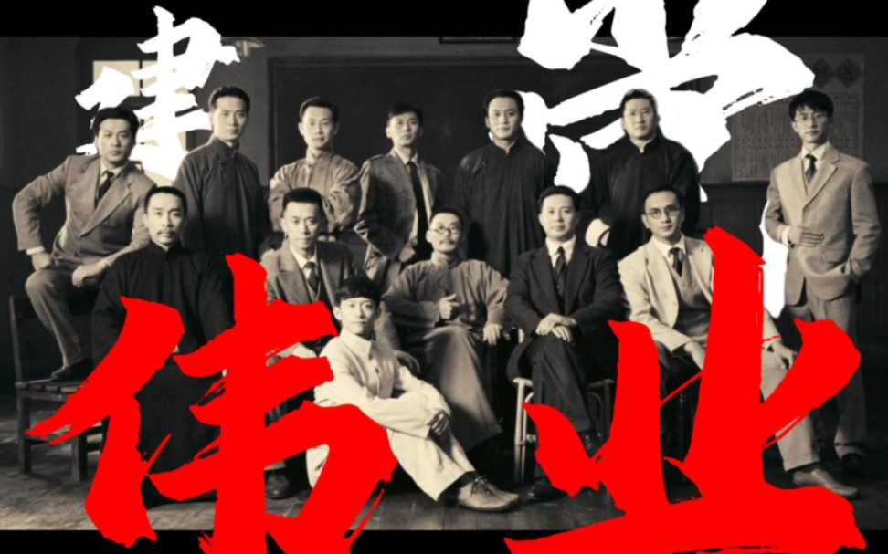
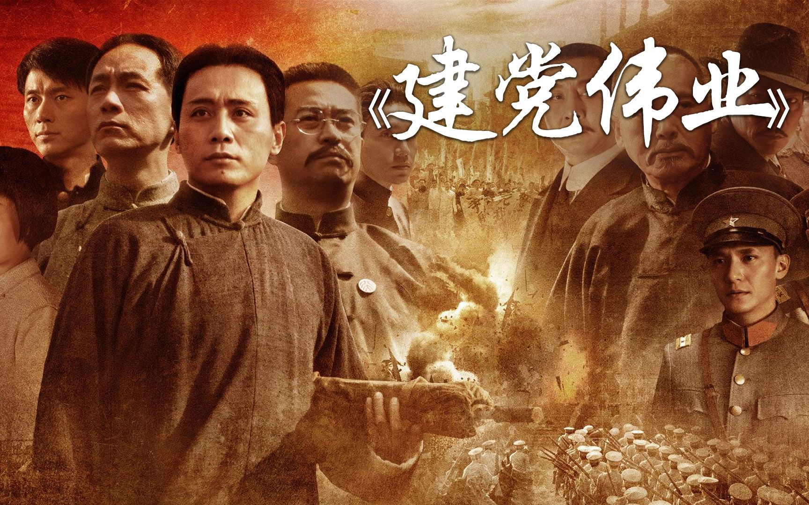
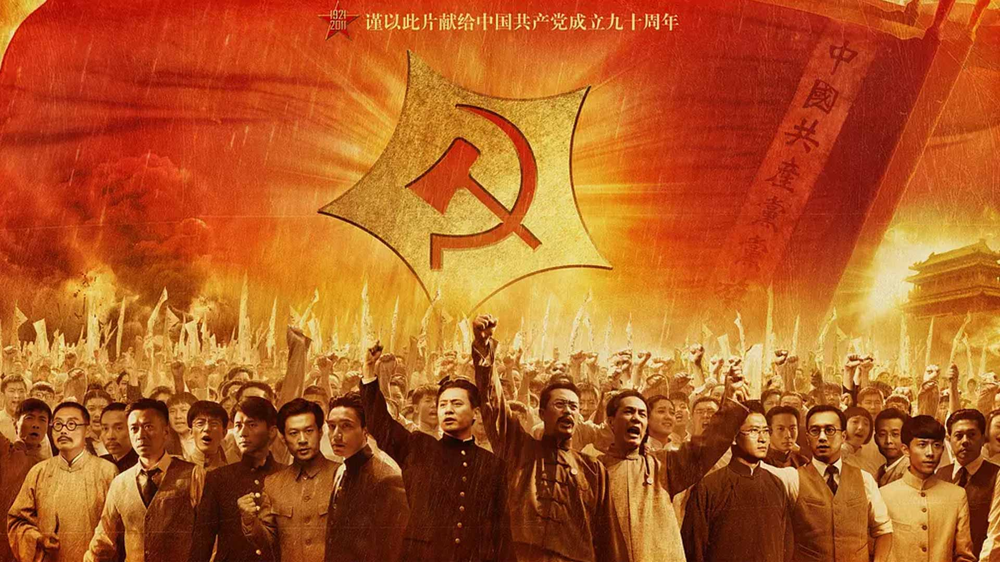

基本信息
《建党伟业》（Beginning of the Great Revival）是由中国电影股份有限公司领衔出品，电影频道节目中心、江苏省广播电视总台、成都市对外文化交流协会等联合出品，韩三平、黄建新联合执导（海外部分由李少红执导，五四运动时期部分由陆川执导，战争场面由沈东执导），董哲、郭俊立、黄建新编剧，刘烨、冯远征、张嘉益、陈坤、马少骅、李沁、周润发等主演的红色爱国主义片。
该片是为庆祝中国共产党建党九十周年而制作的献礼影片，是中国电影股份有限公司“建国三部曲”的第二部，其他两部分别为《建国大业》与《建军大业》。剧情围绕1921年前后展开，讲述从1911年辛亥革命后到1921年中国共产党成立这段时间内的历史故事与风云人物，主要以毛泽东、李大钊、陈独秀、蔡和森、张国焘、周恩来等第一批中国共产党员为中心，讲述他们在风雨飘摇的时代中为国家赴汤蹈火的精彩故事。
该片于2011年6月15日在中国大陆正式公映，首映周拿到1亿1600万票房，在各大院线均保持冠军位置，最终票房超过4亿元。8月28日，荣获第14届华表奖优秀故事片奖。

剧情简介
1911年冬，孙中山从海外归来，于翌年1月1日就任临时大总统。与此同时毛泽东参加了光复新军。很快，袁世凯凭借强大的军事实力和在皇室中的威信，从孙中山手中取得了大元帅之身份，北洋政府成立。同年10月，中国国民党成立。
1914年夏天第一次世界大战爆发，1915年袁世凯与日本定下密约二十一条并且更改国体，自封为中华帝国皇帝，自此走上了一条不归路。孙中山与蔡锷成立护国军，出师讨袁。很快袁世凯便在举国声讨中黯然死去了。之后又随着张勋丁巳复辟的失败，中国进入了军阀割据的混战局面。而毛泽东、李大钊、周恩来等人虽身处不同地方，但都在内心思索着救国救亡之路，命运的相会即将到来。

北京文联副主席索谦评价
影片较好地完成了对于建党历史、特别是对于建党历史背景的展现，使建党的展现有了非常坚实的基础。影片交代很清晰，而且简明扼要。”
大众网-齐鲁晚报
《建党伟业》在尊重历史方面做得很不错，有几场戏给人印象颇深，比如新文化运动，通过陈独秀、李大钊、胡适、辜鸿铭、罗家伦等人在北大的一场辩论，展现出当时思想的活跃和开放，并不刻意丑化辜鸿铭和胡适。

中国新闻网
《建党伟业》全景式地讲述辛亥革命、护国战争、五四运动等历史事件，准确地呈现中国共产党诞生的历史背景。
腾讯网
与《开天辟地》相比，20年后的《建党伟业》则呈现出一幅完全不同的面貌。除去电影产业本身的技术因素之外，在视野上、理念上的开放和进步让《建党伟业》更具可看性，以及更丰富的内涵。
人民网
电影用蒙太奇的手法，再现了那段风雨飘摇的历史，重温了老一辈革命先烈们为了解救人民于水火之中，为了拯救危难中的国家和民族，历尽千难万险和不懈抗争，终于创建了中国共产党的艰辛历程，对我们这些出生在新社会、沐浴在党恩下的年轻人，是一次很好的爱国主义教育。